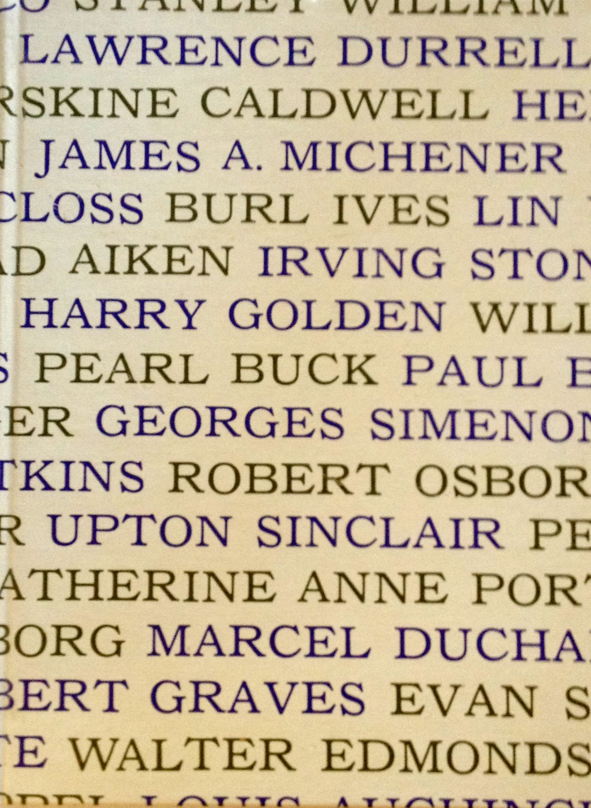

The Artists’ & Writers’ Cookbook
A collection of cooking recipes from artists and writers

Try some recepies!
Harper Lee's crackling cornbread
Denise Levrtov's dessert
Marcel Duchamp's steak tartare
Made by: João Pedro Vasques da Conceição